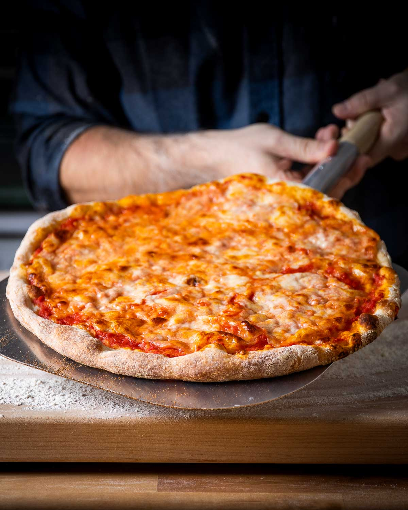

NY Pizza

recipe link
Description
Don’t confuse this pizza with sfincione, which is a traditional pizza from Sicily
that contains breadcrumbs, anchovy, and caciocavallo cheese. The pizza I’m referring
to is the pizza you’d get if you walked into a New York area pizzeria and ordered a
“slice of Sicilian”.
Pictured right below, this popular type of pizza is the thickest of the 3 most common
pizza styles found in New York. It has a thick airy texture with a crisp bottom and
is made in a rectangular pan using block mozzarella cheese, lots of sauce, oregano,
and Pecorino Romano cheese.
Ingredients
- 813 grams bread flour or roughly 6 1/2 cups
- 521 grams cold tap water or 2 1/4 cups
- 3 grams instant yeast or 1 teaspoon
- 16 grams fine sea salt or 2 3/4 teaspoons
- 9.5 grams sugar or 2 1/4 teaspoons
- 27 grams olive oil or 2 tablespoons